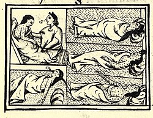
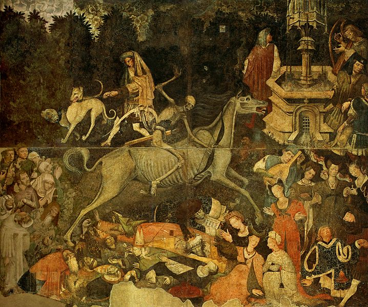

Pandemias
Viruela
Un virus que lleva afectando a la humanidad desde hace 10.000 años. Su nombre hace referencia a las pústulas que aparecían en la piel de quien la sufría. Era una enfermedad grave y extremadamente contagiosa que llegó a tener tasas de mortalidad de hasta el 30%.
Se expandió masivamente en el 'nuevo mundo' cuando los conquistadores empezaron a cruzar el océano afectando de manera terrible una población con defensas muy bajas frente a nuevas enfermedades, y en Europa tuvo un periodo de expansión dramático durante el siglo XVIII, infectando y desfigurando a millones de personas.

Sarampión
Se estima que el sarampión acabó con la vida de 200 millones de personas antes de que se encontrase una vacuna.
Precisamente antes de que la vacuna se introdujera en 1963 y se generalizara su uso, cada 2-3 años se registraban importantes epidemias de sarampión que llegaban a causar cerca de dos millones de muertes al año.

La 'Gripe Española'
A pesar de que los primeros casos se dieron en Estados Unidos en 1918, esta gripe fue bautizada así porque España se mantuvo neutral en la Gran Guerra y la información sobre la pandemia circulaba con libertad, a diferencia de los demás países implicados en la contienda que trataban de ocultar los datos.
En plena I Guerra Mundial, la 'Gripe Española' se extendió por medio mundo sin control, dejando a su paso entorno a 50 millones de fallecidos.
Peste negra
Esta pandemia asoló a Europa a mediados del siglo XIV transmitiéndose a través de parásitos como pulgas y piojos que vivían en ratas, otros roedores y en los propios humanos.
Se cree que una vez más la epidemia empezó en Asia y se dispersó hacia Europa aprovechando las rutas comerciales.

VIH
A pesar de que pueda parecer una enfermedad diferente a las anteriores, el virus de la inmunodeficiencia humana tiene una tasa de mortalidad del 80% si no se trata a tiempo.
Por el momento no hay cura, aunque sí cuenta con determinados tratamientos que pueden llegar a disminuir la enfermedad hasta casi eliminarla del organismo en los mejores casos